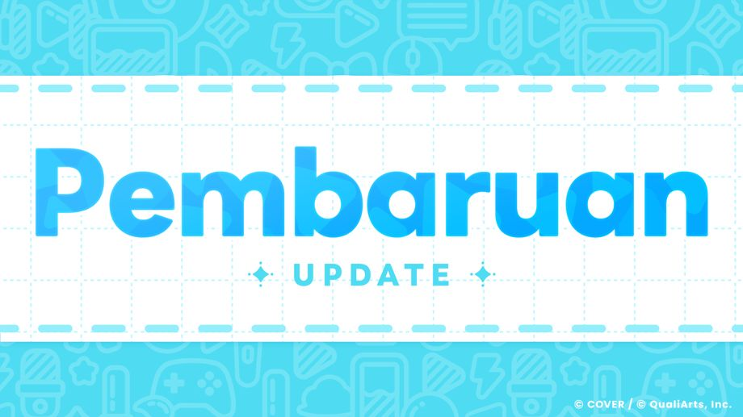

Terima kasih sudah menggunakan layanan ini.
Ini adalah tim operasional "hololive Dreams."
2026-07-30 12:30:00: Pembaruan versi 1.0.100 telah dirilis.
Pembaruan sudah dapat diunduh melalui store.
Fitur dapat digunakan setelah pembaruan muncul di store. Mohon tunggu sejenak hingga pembaruan tersedia.
Waktu kemunculan pembaruan di store dapat berbeda-beda untuk tiap pemain. Terima kasih atas pengertiannya.
*Force update dijadwalkan pada: 2026-08-06 11:00:00
*Jika tidak melakukan pembaruan sebelum force update, hasil dari Live atau minigame yang sedang dimainkan mungkin tidak akan tersimpan tepat setelah force update.
◆Penyesuaian Minigame "Collect Cooking"
Karena terkonfirmasi adanya masalah di mana skor yang tidak mungkin dicapai dalam permainan normal dapat tercatat melalui operasi tertentu, kami telah melakukan beberapa penyesuaian.
- Penghapusan fitur pause
- Perubahan agar waktu di dalam game tetap berjalan meskipun aplikasi dipindahkan ke latar belakang (background) saat dimainkan.
Sehubungan dengan penyesuaian ini, kami merencanakan untuk mereset peringkat Collect Cooking.
Untuk detail selengkapnya, silakan periksa pengumuman "Kesalahan yang Dikonfirmasi Saat Ini".
◆ Penambahan "Streamer Mode"
Menambahkan "Streamer Mode" yang memperhatikan hak cipta/penggunaan lagu.
Saat Streamer Mode berada dalam kondisi ON, volume lagu yang bersangkutan akan menjadi 0 di setiap tampilan game.
Anda dapat mengaturnya melalui [Option] → [Sistem] → [Streamer Mode].
◆Perbaikan Bug
Berikut adalah perbaikan bug yang telah dilakukan:
- Pada kondisi tertentu, Mega Circuit tidak dapat dilanjutkan sebelum permainan dimulai.
- Pada kondisi tertentu, Pokajan! menjadi tidak dapat dilanjutkan di tengah permainan.
- Terdapat kesalahan di mana nama pemain akan terreset menjadi kosong jika melakukan taut akun ke perangkat baru sebelum menyelesaikan Cerita Utama 1 Episode 1 'Awal Sebuah Mimpi'.
- Perbaikan bug ringan lainnya.
◆ Pembaruan Lainnya
-
2026-07-26 19:00:00: Mengubah sebagian konten Quest Utama pada Cerita Utama 2 Episode 2 "Laju Kencang! Mega Circuit!".
Sebelum perubahan: Lampaui rintangan dengan masuk 8 besar di Mega Circuit
Setelah perubahan: Mainkan Mega Circuit
-
Menyesuaikan jumlah sebagian hadiah agar Koin Mega Sphere lebih mudah didapatkan.
・Meningkatkan jumlah koin menjadi 2 kali lipat saat berhasil menyusun poker hand pada High & Low.
・Menambahkan misi baru pada Misi Pemula yang berhadiah Koin Mega Sphere.
・Menyesuaikan multiplier untuk peringkat 13 ke bawah pada Mega Circuit.
*Dampak dari pembaruan ini, Misi Pemula akan kembali muncul pada daftar Event bagi para pemain yang sebelumnya sudah menyelesaikan dan mengklaim seluruh hadiah dari misi tersebut.